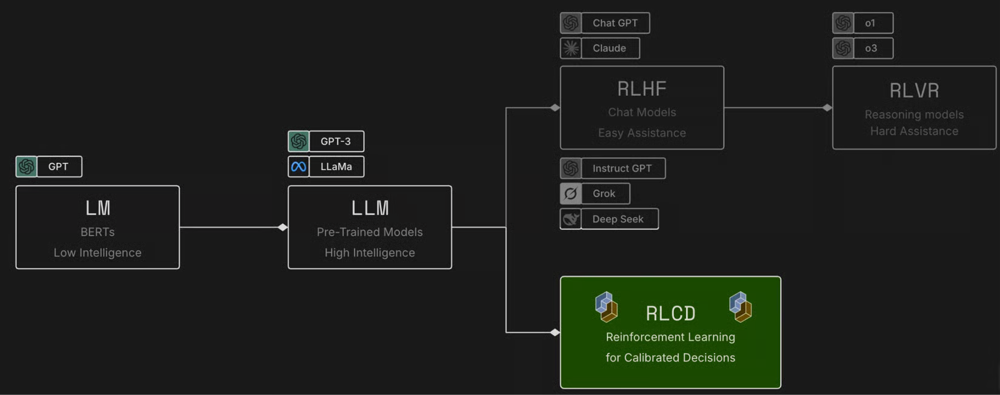
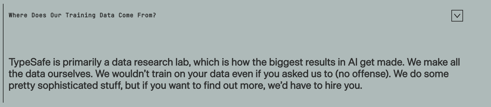
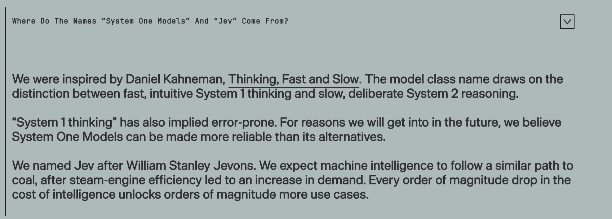

已公开 官方可验证
API schema、价格、输出类型、并行采样与公开声明。
不生成字符串的“前沿智能函数”——
它是新架构、新训练任务，还是新的产品边界？
李睿哲 · 2026.09.23
API schema、价格、输出类型、并行采样与公开声明。
InMind、MAB、DRB2、DRB1 和 TTCW；结论受实验协议限制。
LLM backbone、dynamic readout、Qwen3.5 基座等只做证据链分析。
{ "state": { "message": "I was charged twice. Fix this ASAP.", "duplicate_charge": true }, "questions": { "intent": { "type": "choice", … }, "frustration": { "type": "score", … }, "needs_human": { "type": "noul", … } } }
输入长度：当前公开 OpenAPI 没有披露硬性 context 上限；因此不把实测限制误写成架构上限。
从运行时给定的候选中选一个；返回 choice、全部候选概率与 confidence。
对有序 rubric 评分；score 是各级别概率的加权期望，可为小数。
评估一个 yes/no 命题；单个数值就是 P(yes / true)，0.5 表示不确定。
所谓“不会 hallucinate”只能严格理解为：不会返回 schema 之外的值。它仍然可以在合法选项中选错。
"intent": { "type": "choice", "instructions": "Which team should handle this?", "criteria": { "billing": "Payments, refunds, or charges", "technical": "Product malfunction", "other": "Everything else" } } // 响应使用同一个 ID "intent": { "choice": "billing", "probabilities": {"billing": 0.96, …} }
一个 state 对应多个 questions，模型不用像 LLM 一样逐 token 解码长字符串；多个 typed outputs 在一次查询中返回。
跨请求的相同前缀是否缓存、账单是否折扣，是 serving 层问题。当前没有官方证据支持“前缀命中”。
速度与价格来自 TypeSafe 自报；官方也明说 193.6× / 444.6× 是其 workflow 上偏高的增益，不应外推为所有任务的普遍结论。
不用官方的 workflow 图直接下结论，而是看它在检索、judge 和时序判定上的交叉实测。
| Benchmark | 测什么 | 视角 | 样本 | 主指标 |
|---|---|---|---|---|
| MAB | 记忆选择 | query + memory | 60 | Accuracy |
| InMind | 对话记忆检索 | exchange / session | 20 same + 125 Jev | R@K / MRR |
| DRB2 | 深度研究步骤决策 | 739 个 typed decisions | 739 | Acc / macro-F1 / κ |
| DRB1 | 报告质量 judge | RACE 多维裁决 | 17 same | Overall / per-dimension |
| TTCW | 时序一致性 | hard vs soft aggregation | 48 stories / 672 | rank correlation |
完整 125 条 Jev 交换级检索成本约 $1.0425；会话级视图 R@1 降到 49.6，说明粒度选择很重要。
| Model | R@1 | R@5 | R@10 | MRR |
|---|---|---|---|---|
| Jev | 85 | 90 | 90 | .867 |
| Nimble-9B | 70 | 95 | 95 | .774 |
| Kev-4B | 55 | 65 | 70 | .606 |
| Laya | 10 | 15 | 15 | .113 |
| Model / rule | Accuracy | Macro-F1 | Cohen κ | 解读 |
|---|---|---|---|---|
| Gemini 2.5 Pro | 90.66 | .8858 | .7944 | 当前最强 |
| Jev | 89.17 | .8071 | .7478 | 接近前沿 LLM |
| GPT-5 | 87.14 | .6050 | .7032 | 少数类 F1 较弱 |
| Nimble-9B · hard-any | 70.64 | .5641 | .4536 | 准确率接近 always-0 |
| Kev-4B · hard-any | 68.74 | .5494 | .4421 | 仍有明显差距 |
| Always 0 | 70.50 | .2757 | 0 | 类别不平衡基线 |
不能只报 accuracy：一个永返 0 的模型也有 70.50%，但它对真正需要裁决的少数类几乎无用。
这是同样 17 篇报告上的小样本交叉对比，不是全量 DRB1 leaderboard 结论。
Spearman .1138
Kendall .1236
Pairwise .6944
Spearman .5305
Kendall .4569
Pairwise .7500
硬阈值把 0.49 和 0.01 都压成 0，也把 0.51 和 0.99 都压成 1。概率是 Jev 最有价值的产品界面，不应立即丢掉。
交换级 memory retrieval、规则分解后的 judge / scorer、保留概率的排序聚合。
DRB2 接近前沿 LLM，DRB1 小样本接近 GPT-5.5；但仍需扩大同协议实验。
长上下文、复杂时序推理、视觉多模态、任意开放生成任务。
LLM 预训练带来通用表征；Jev 将输出空间从自由字符串改成动态决策，再用 RLCD 和数据把概率变得可用。
动态 label 的语义可以在运行时理解，而不是每个任务重新收集标注。
强 LLM 能够构造跨领域决策任务、反例、改写和软标签。
生成式 frontier intelligence 很强，但高频、实时、机器消费的任务无法为长 CoT 付费。
程序需要概率、类型和可组合控制流，不是更流畅的自然语言。
Transformer-based；从 pretrained base model 继续训练；new architecture、parallel sampler、RLCD。
主干仍是 decoder-style LLM Transformer；改造集中在输入组织、mask、query / option 表征与 readout。
是否使用原 LM head、是否有 scalar / pointer head、是否一次 forward，以及具体 attention mask。
同一个共享 F 对任意数量、任意语义的候选打分，才能支持 zero-shot dynamic label space。
把 options 映射到专用 token，只读决策位置的 logits，不继续文本 decode。
每个 option 先得到表示，再用共享 head 读出 zᵢ。
专用 question / option query 共享 state，在一个并行 sampler 中读出多个 scalar。
三者是同一 LLM backbone 上的读出设计，可以混合；官方尚未披露 Jev 采用哪一种。

| 路线 | 优化目标 | 奖励 / 监督 | 输出 |
|---|---|---|---|
| RLHF | 人类偏好的回答 | human preference / preference model | 有帮助、自然的文本 |
| RLVR | 可程序验证的最终结果 | checker / unit test / rule | reasoning + answer |
| RLCD | 决策正确且概率诚实 | programmatic outcome / target distribution? | typed probabilities |
RLCD 现在更像一个 task / North Star，不是已公开的唯一优化器；截至 2026-09-23 没有技术报告或完整损失函数。

Jev 从 pretrained base model 出发，是 transformer-based model。官方未给出模型名、参数量或 tokenizer。
小红书截图/社区讨论将特征指向 Qwen3.5；Nimble 和 Kev 也都选择 Qwen3.5 来复制这种形态。
自研 dense / hybrid backbone、其他开源基座、或混合多个技术路线；性能轮廓不能唯一反推 base。
社区线索：小红书原帖 ↗ · 网页未直接复制受限页面图片，仅保留可审核的出处。
没有项目复现了 proprietary Jev / RLCD。但 Nimble 和 Kev 分别验证了“原 LM head”与“新 decision head”两条路。
Qwen/Qwen3.5-9B 作为直接父模型；它本身已是 post-trained checkpoint，底层来自 Qwen3.5-9B-Base。
2,676 train + 324 eval；1,338 对 contrastive pairs，34 task families / 10 categories。数据与构造代码已开源。
不加新 head；使用原 vocabulary LM head，对单 token 候选 A/B/C 做 restricted logits 交叉熵。
LoRA r=16 / α=32 / dropout .05，1 epoch，lr 5e-5，effective batch 8，BF16 H100。SFT / CE，不是 RL。
当前 main 为 Qwen/Qwen3.5-4B-Base；旧 qwen3 tag 才是 Qwen3-4B-Base。
10 个公开源×1,000 + 896 policy + 1,680 compositional = 12,576；数据开源为 kev-suites。
每个问题独立成 causal row 并共享 state prefix；使用 decide hidden state 与 option-end hidden state 的 pointer score。
LoRA r=16，初始 2 epochs / lr 5e-5；delta 1 epoch / lr 2e-5；监督 CE，无 RL；事后温度 T=2.14。
| Jev | Nimble-9B | Kev-4B | |
|---|---|---|---|
| Base | 未公开 | Qwen3.5-9B | Qwen3.5-4B-Base |
| Readout | 未公开 | 原 LM head · A/B/C logits | pointer head · dynamic options |
| Data | 自建，未开源 | 3K 级开源对比数据 | 12.6K 开源决策数据 |
| Objective | RLCD · 细节未公开 | candidate-logit CE | pointer CE + temp scaling |
| Our MAB 60 | 75.0% | 71.7% | 66.7% |
| Our InMind same20 R@1 | 85% | 70% | 55% |
System One / System Two、The Bitterest Lesson，以及为什么他们不想再造一个 chat model。
快速、高频、输出空间已知的决策；目标是软件直接消费。
慢速、审议、长链推理、规划与自由生成；更像 reasoning LLM / agent。
Jev 之名来自 Jevons paradox：单位智能越便宜，可能解锁更多原本不值得自动化的决策，反而增加总需求。

这也解释了为什么 RLCD 现阶段首先是任务定义，其次才是具体算法。
训相似数据，或试足够多超参数，然后选中公开分数最高的 checkpoint。
新模型与直觉冲突时，人们修订指标，直到排名看起来“合理”。
运行私有 eval；报告 caveat、负例和试验次数；把每次结果当成时间快照。
泛化性、可靠性、成本与时延。
与固定任务的 BERT classifier 相比，Jev 的底座有更广的通用知识；给它新的问题和候选，它也能直接做判断。
Top-5 检索后回答正确：Jev 45/60（75.0%）；Laya 19/60（31.7%）。
Exchange gold chunk 检索：Jev R@1 85%、R@5 90%；Laya R@1 10%、R@5 15%。
来源：本地交叉测试报告 ↗。MAB 是固定 60 题子集；InMind 的 exchange 粒度比 session 粒度更适合直接比较。
我们把“对齐”分成三层；只看选对了没有，还不够。
排第一的答案是不是对的？
正确答案是不是排在前面？
给出的概率和实际正确率是否相符？
先放我们实测过的 Jev 检索开销；与生成式 LLM 的同协议对照，后面再补。
| 实验 | 平均候选 / 题 | 检索 API 费用 / 题（一次排序） | 单次调用平均时延 |
|---|---|---|---|
| MAB · 60 题 | 447.5 | $0.01694 | 未记录 |
| InMind · 125 题 / exchange | 241 | $0.008340 | 518 ms |
| InMind · 125 题 / session | 47 | $0.005743 | 696 ms |
来源：MAB 成本汇总 ↗；InMind125 本地原始汇总 always-on-memory/results/jev_inmind_pairwise_probes/summary_full125.md。
代码、报告、agent trace、安全规则、风险和质量维度的并行评分。
路由、意图、优先级、实体和政策标签；标签集可运行时更新。
先用通用 Jev 冷启动，累积 outcome / 私有数据后，再蒸馏成更小的专用 decision model。
能否在不回到长链自回归生成的前提下，引入更稳定、更便宜的内部计算？
如何在长状态中保留检索召回与校准？是换 base，还是引入 hierarchical readout？
当前 Doom demo 读取的是带文本的结构化状态，不是图像。真多模态需要 vision / audio encoder 或多模态 base。
一个模型能否在 typed parallel decision 与开放生成之间切换，而不牺牲两边的效率和校准？
Jev 的关键不是“小 LLM”，而是从自由文本改为动态 typed probabilities。
它在 retrieval / judge / scorer 上已显示前沿能力，但长上下文、推理和多模态尚未证明。
架构可能只是一部分；更难复制的很可能是任务定义、合成数据、校准与 serving 联合优化。